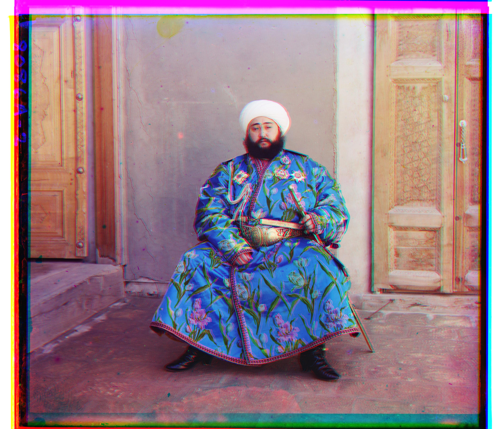
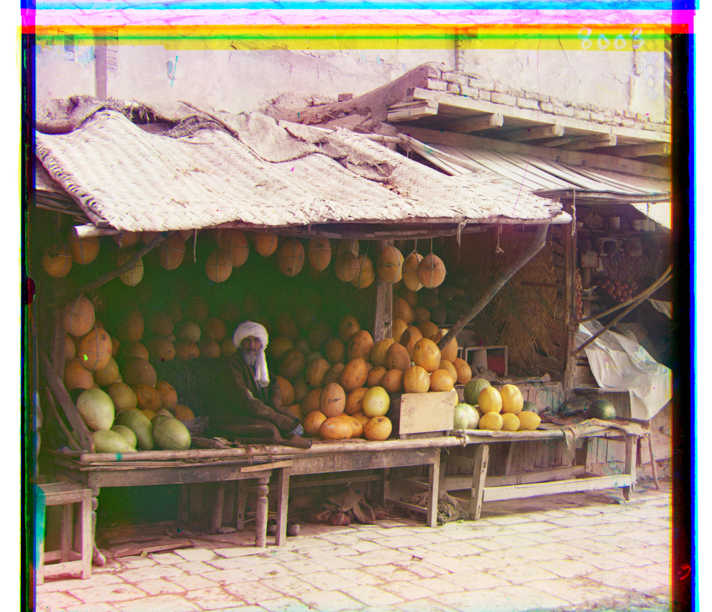
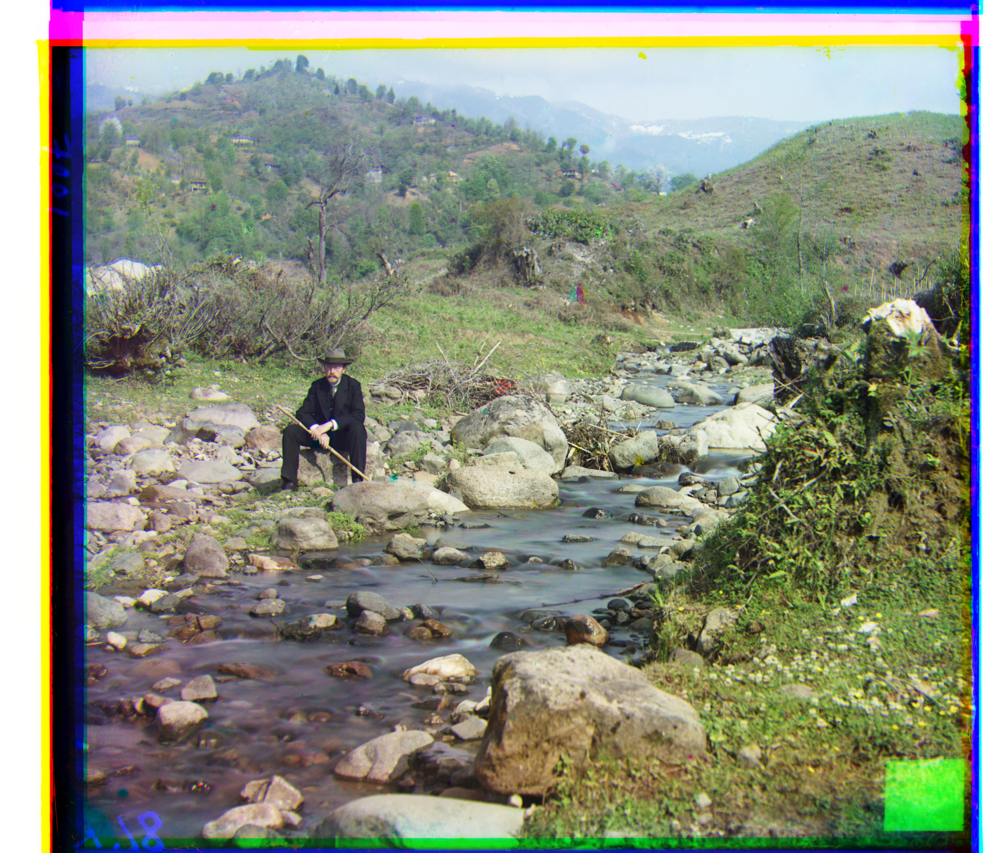
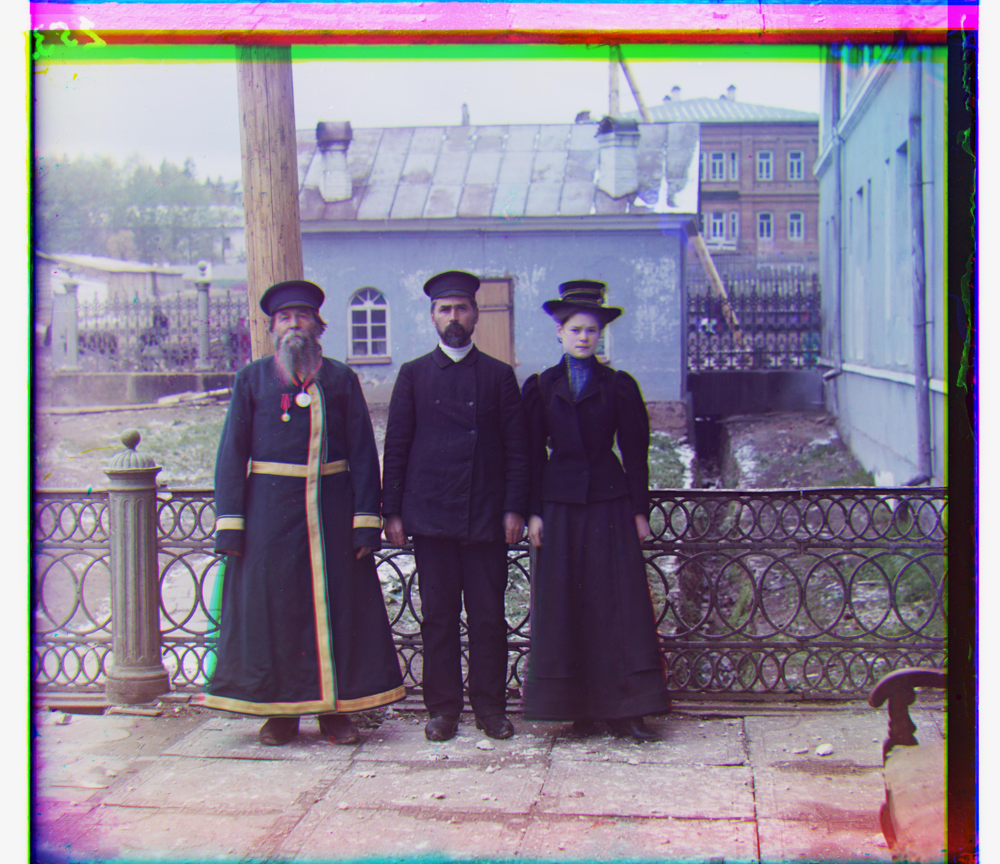
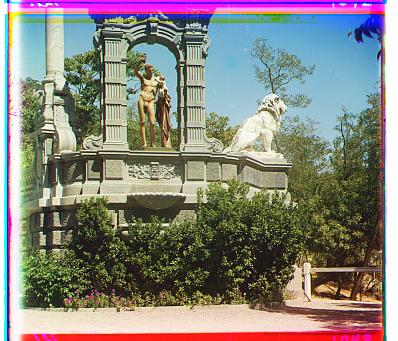
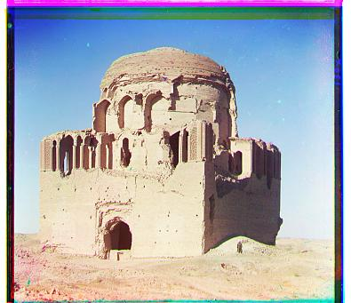
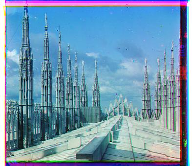
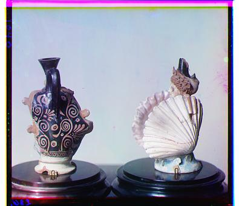

This project colorizes Sergei Prokudin-Gorskii's stacked glass-plate scans. Each input consists of blue, green, and red exposures arranged vertically.
I split each grayscale scan into its B, G, and R thirds, align G and R to B, and stack the aligned channels into an RGB image. I use normalized cross correlation (NCC) as the matching metric. NCC compares image structure rather than absolute brightness, which makes it more reliable across the three exposures. I ignore a border while scoring so the glass-plate frame and displaced array wraparound do not affect alignment.
For the small JPEGs, I exhaustively search displacements in a ±15-pixel window. For the large TIFFs, I use a coarse-to-fine image pyramid: align the smallest whole-image version first, double that estimate at each higher-resolution level, and refine it in a small local window.
Results using brute-force NCC on the provided low-resolution JPEG images.
Results using pyramid NCC, including the provided JPEG and full-resolution TIFF images.
Computed displacements are reported as (dy, dx): row shift, then column shift.
| Image | G → B | R → B |
|---|---|---|
| cathedral | (5, 2) | (12, 3) |
| monastery | (-3, 2) | (3, 2) |
| tobolsk | (3, 3) | (6, 3) |
| church | (25, 4) | (58, -4) |
| emir | (49, 24) | (104, 56) |
| harvesters | (60, 17) | (124, 14) |
| icon | (41, 17) | (89, 23) |
| ilemselga | (40, 7) | (130, 11) |
| melons | (82, 11) | (178, 13) |
| religious painting | (28, 3) | (68, 7) |
| self portrait | (79, 29) | (176, 36) |
| siren | (49, -6) | (96, -25) |
| three generations | (53, 14) | (112, 11) |
| wharf | (15, -7) | (83, -16) |











I also ran the same fixed-parameter pipeline on several additional glass-plate scans.



